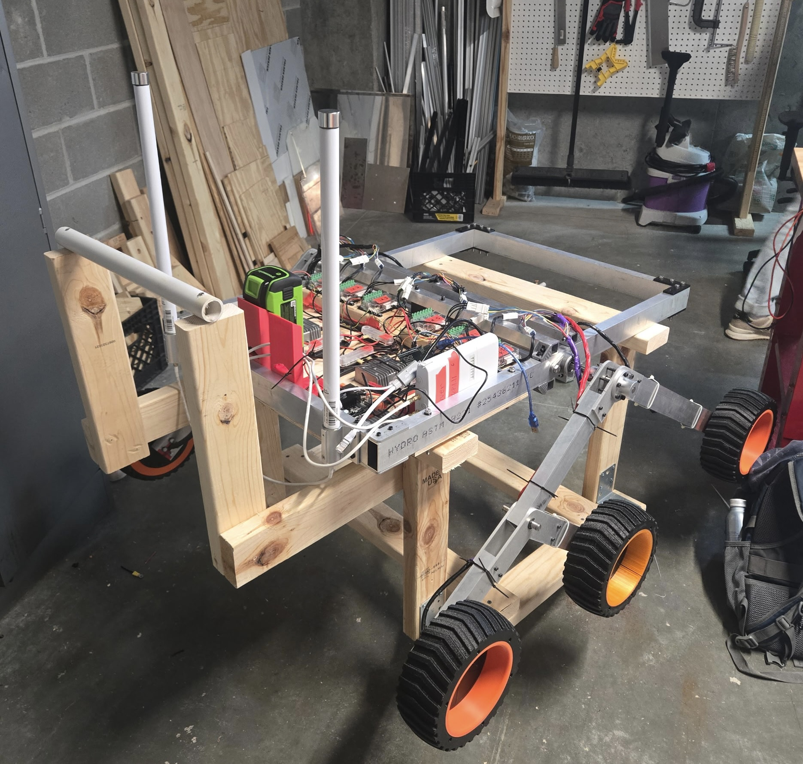
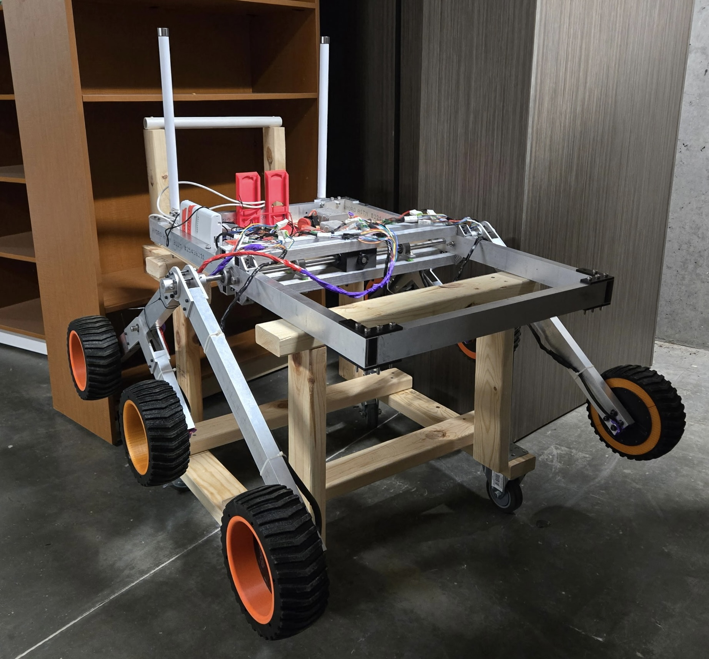

University Rover Competition
The second competition we entered was the University Rover Challenge, a worldwide robotics competition for university students that challenges teams to design and build a rover that would be of use to exploration on Mars. Held in the Utah desert annually, it attracts institutions from all over world to compete. We began in 2023, building an early prototype rover. In 2024, we attempted to enter the competition by building upon our work in 2023, but ultimately pulled back near competition after assessing our progress. Myself, the past and present captains, and all members who were not graduating agreed we would spend the 2025-2026 academic year designing and constructing a robust base robot that could be easily adapted and used for the 2027 competition. Recognizing the unknowns involved in designing a robot for use in a competition whose details were not released, we elected to build a frame that approached the size limitations, a standard that appears to remain unchanged year to year. One key aspect of our design was the development of a hot-swappable battery system that took advantage of commercial tool batteries. Tool batteries have robust, well-made battery management systems designed for use by construction crews in a large variety of environmental conditions, and so they are well adapted for the dusty desert. Another unique feature was the custom wheels we made using printed components. Most 3D printable materials are not designed for good contact and high friction, so we used TPU, the most flexible and rubbery material. It proved to be more than sufficient given the weight of the rover's chassis, which did not include scientific or manipulator devices onboard.

